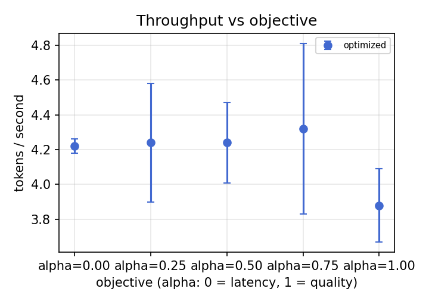
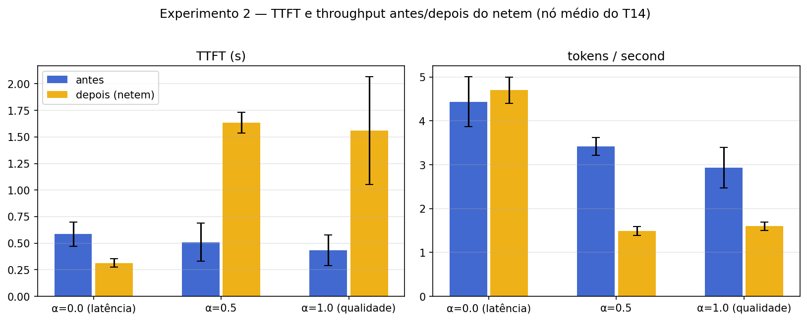
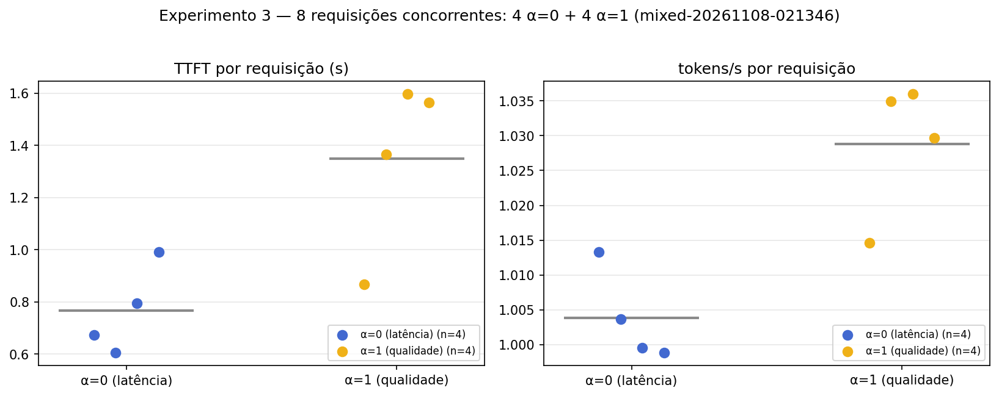
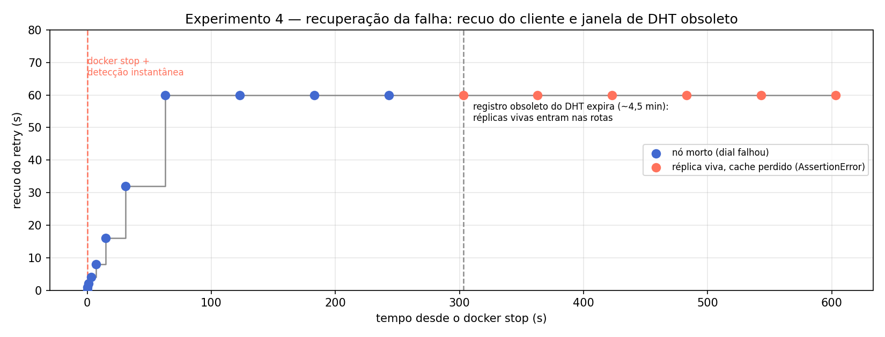
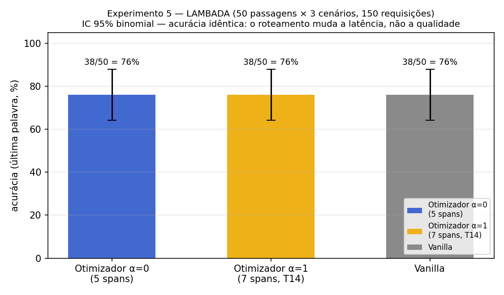

6 · Resultados
Dados obtidos e discussão
6.1 Varredura de α (fronteira de Pareto)
| α | tokens/s | TTFT (s) | Decisão (ms) | NLL/tok vs fp32 | Concordância |
|---|---|---|---|---|---|
| 0.00 | 4.2 ± 0.0 | 1.29 | 0.5 | 1.133 | 1.00 |
| 0.25 | 4.2 ± 0.3 | 0.65 | 0.4 | 1.133 | 1.00 |
| 0.50 | 4.2 ± 0.2 | 0.95 | 0.3 | 1.133 | 1.00 |
| 0.75 | 4.3 ± 0.5 | 1.07 | 0.4 | 1.133 | 1.00 |
| 1.00 | 3.9 ± 0.2 | 0.75 | 0.3 | 1.133 | 1.00 |
| vanilla | 4.4 ± 0.3 | 0.50 | — | — | — |
A rota muda de composição ao longo do α: com α=0 a rota usa 5 spans em hosts locais rápidos; com α=1 o roteador inclui o span fp32 do T14 e a perplexidade prevista cai (22,075 → 22,025) ao custo de tokens/s menores. Isso é uma diferença no escore de roteamento, não evidência observada de texto melhor: como todas as rotas servem o mesmo modelo, a dimensão qualidade aparece no custo da rota, não no texto gerado. Overhead de decisão: 0.2–0.6 ms por requisição (desprezível).

6.2 Degradação de rede (netem)
| α | TTFT antes → depois | tokens/s antes → depois | Lat. prevista antes → depois | Rota mudou? |
|---|---|---|---|---|
| 0.0 | 0.58 → 0.31 s | 4.43 → 4.70 | 0.84 → 0.84 s | Não — rota não toca o nó degradado, dano zero |
| 0.5 | 0.51 → 1.63 s (+220%) | 3.42 → 1.49 (−56%) | 0.91 → 0.94 s | Não |
| 1.0 | 0.43 → 1.56 s (+263%) | 2.93 → 1.60 (−45%) | 0.91 → 0.98 s | Não |
O impacto se divide exatamente ao longo do objetivo: a rota de latência (α=0) não usa o nó degradado e não sofre nada; as rotas de qualidade (α=0.5/1) passam por ele e não podem desviar — os blocos que ele hospeda têm dono único nesta topologia. O não-desvio é uma restrição de topologia, não uma falha do roteador: roteamento adaptativo só entrega resiliência quando o enxame expõe alternativas reais — réplicas sobrepostas com telemetria suficientemente atual. A latência prevista quase não reagiu (0.91 → 0.94 s) enquanto o TTFT real triplicou: a tabela de RTTs do DHT atualiza lento demais para capturar um atraso súbito — a extensão natural são sondas de RTT por requisição.

6.3 Carga mista concorrente
8 requisições simultâneas (4 α=0 + 4 α=1): rotas diferenciadas por grupo no mesmo instante — α=0 → rota larga bf16 (6 spans via mac-fast-bf16); α=1 → rota de 7 spans pelos spans fp32 do T14. TTFT por requisição 0.61–1.60 s; tempo de decisão 0.2–1.5 ms; 0 erros. A instrumentação por requisição (ContextVar current_route) elimina a condição de corrida de leitura do estado compartilhado do gerenciador.

6.4 Injeção de falha em plena geração
- Detecção instantânea — o erro de conexão chega no mesmo segundo do docker stop.
- Janela de DHT obsoleto (~5 min) — o DHT continua anunciando o nó morto; as reconstruções de rota continuam escolhendo-o e o cliente recua progressivamente (1 → 2 → 4 → … → 60 s).
- Autorrecuperação do enxame — expirado o registro obsoleto, o DHT entrega réplicas vivas de substituição e o bloco perdido volta a ser coberto.
- A requisição interrompida não migra — o KV cache vivia no nó que caiu; continuar numa máquina nova falha na checagem de comprimento (AssertionError('0 and N')) e a requisição nunca completa — enquanto toda requisição nova funciona na topologia reparada.
O enxame sobrevive; a requisição em voo não — o que aponta para a extensão natural: reenviar o prefixo ao novo dono do bloco no failover.

6.5 Acurácia em tarefa real (LAMBADA)
| Cenário | Rota | TTFT | tokens/s | Acurácia |
|---|---|---|---|---|
| Otimizador α=0 | 5 spans | 0.96 s | 2.65 | 38/50 = 76% |
| Otimizador α=1 | 7 spans, via T14 fp32 | 1.35 s | 2.02 | 38/50 = 76% |
| Vanilla | — | 0.93 s | 2.57 | 38/50 = 76% |
O roteamento muda a latência, não a acurácia: a rota de qualidade (α=1) paga +40% de TTFT e −24% de throughput para atravessar os spans fp32 remotos, mas a acurácia é idêntica — mesmo modelo e decodificação gulosa determinística produzem o mesmo texto em qualquer rota. O ganho de qualidade potencial (blocos em precisão total) aparece no custo da rota, não no acerto. Overhead de decisão: 0.37–0.44 ms.
